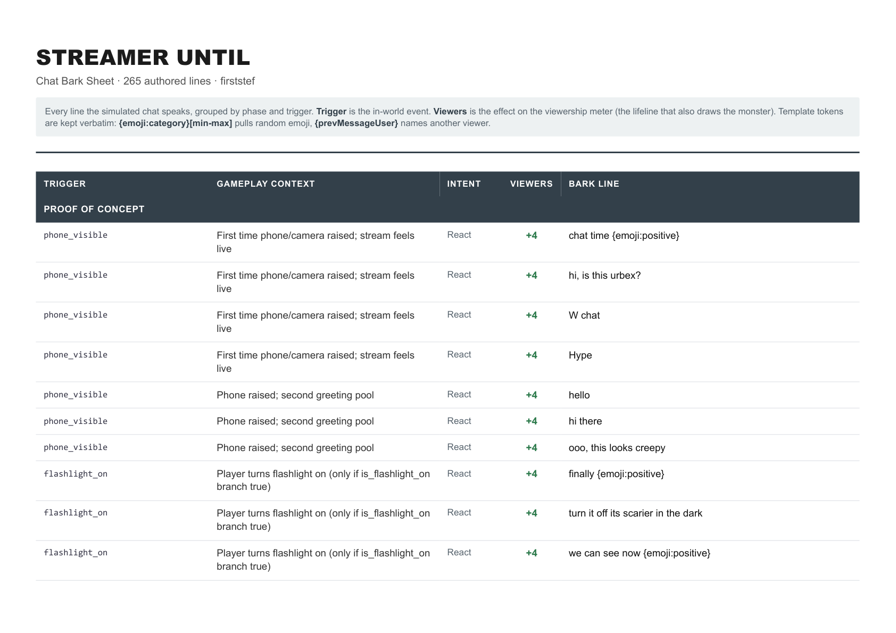
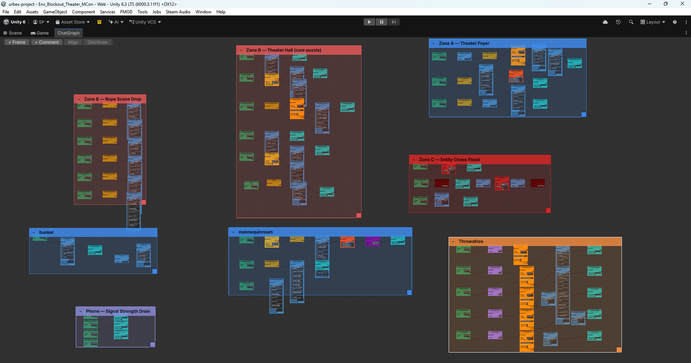
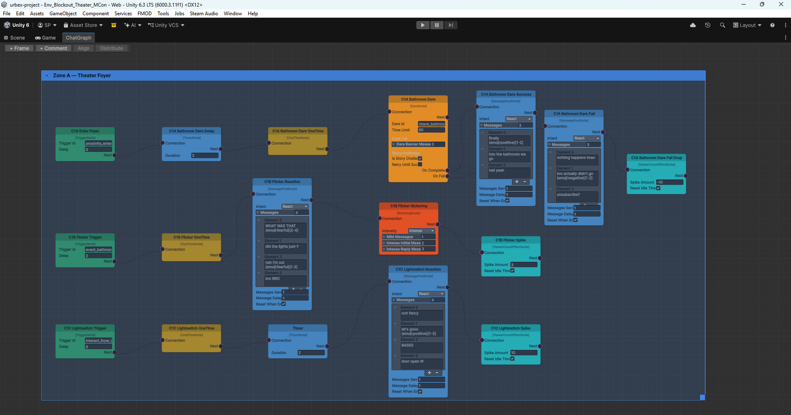

A first person horror game where you livestream from an abandoned building and a simulated audience watches. The crowd is not set dressing. Its attention is your health bar, and it is also the difficulty setting on the thing hunting you.
Four person game jam team, Unity, March 2026. I owned the system end to end: the simulation, the authoring tool it runs on, and the 289 lines that run through it. The hide volumes and the entity AI are a teammate's work.
Attention is the only resource in the game, and both staying alive and getting killed are paid for out of it.
The jam theme was social media. Putting a live chat on screen at all times is a bad idea for horror, which usually runs on isolation, so the only way it works is if the chat is the threat rather than the company.
That gave the game one number to build everything on. Viewership is health: at zero the stream ends and the run is over. Viewership is also the monster's awareness, so the bigger the crowd, the harder it hunts. You raise it by doing what the crowd dares you to do, and the same noise that keeps you alive is what gets you found.
Once one number does both jobs, every line the crowd says has a price. Writing a reaction stops being flavour and becomes a tuning decision: how many viewers this moment wins or loses, and how much danger that buys.
The player looks at something, stands still too long, or crosses a volume. Triggers do not call the chat directly. They publish onto a shared event bus, so the level and the audience stay decoupled and a designer can rewire either one alone.
A trigger opens a dare, a message pool, a timer or a flood, depending on how the graph was authored for that zone.
Viewers carry five traits, so a jump scare tends to come from the fearful ones and a dare from the trollish and the brave. The line is chosen from the pool by the personality that fits it.
It is parsed for emoji and mentions, dropped into the feed, and its viewership effect is layered onto the meter.
Zero ends the run. On the way there the number is feeding the monster's awareness, so the crowd you built is what makes the danger real.
The signal model is the same idea pushed one step further. Signal strength is a running cost rather than a readout on the phone: no signal drains five viewers a tick, low drains two, medium one, and full signal has no drain wired to it at all. That is what makes walking into a dead zone to restore power worth doing, and it is why silence in this game is expensive rather than restful.
The audience is a population, not a queue of strings. Each simulated viewer carries five traits, and the traits decide who is plausible for a given kind of line. That is the whole trick, and it is a small amount of code, but it does the thing a random shuffle cannot: the chat develops a temperament you can read.
It matters because the player has to learn to predict the crowd in order to survive it. If lines came out at random, the dares would feel arbitrary and the punishment for ignoring them would feel unfair. Because a personality is behind each one, a bored crowd sounds bored, a panicking crowd sounds panicked, and the player can tell which one they are dealing with before the meter tells them.
The constraint that shaped the writing more than anything else is that the audience can only perceive what the camera and microphone pick up. An early draft had the chat reacting to the monster while the player was hidden in a cupboard, which was impossible, since the camera was pointed at a cupboard door. Cutting those lines turned the hiding section from a horror scene into a boredom scene, and that is what made it work.

I did not hand code the reactions. On a four person team with one programmer on the audience, hand coding it would have made me the bottleneck for every writing change until the deadline.
So I built a node based chat graph editor in Unity on top of the open source xNode, with fifteen authorable node types: triggers, message pools, timed dares, viewer count effects, counters, cooldowns, flags and conditions, and floods. Graphs and nodes are ScriptableObject assets, which is the part that mattered in practice. A quest is a file. Someone who does not program can open it, follow a trigger through its conditions, rewrite what the crowd says, and save, without touching code or waiting on me.
Both screenshots below are the shipped project rather than diagrams drawn for a portfolio.


A quest set in the bunker under the theatre, written to show what the system above supports. Climbing down cuts the phone signal, so the crowd goes silent while it keeps draining, and the player has to walk into the dark to restore power.
The design work was inverting the safe answer. Once the noise wakes something up, hiding keeps you alive and loses you the run, because a bored audience leaves. The document carries the beat structure, the chat lines, the flags and triggers, the failure states and the tuning I am unsure about, all written against node types that already run in the tool.
An improvising crowd is the obvious thing to reach for here, and I deliberately hand authored it instead. The reasoning is the same one that shaped both of the other projects on this site.
Every line in this game carries a price. A reaction is a number moving on the meter that decides both whether you live and how hard the monster is hunting. A generated line would need something to assign it that price, and whatever assigned it would be guessing at the balance of a game running on one number. The failure mode there is a drain rate nobody chose, which is far worse than a clumsy sentence.
The jam constraint mattered too. In the time available, 289 authored lines with known costs were a surer bet than a system needing tuning I could not have done.
The shape carries over even where the technology does not. An event bus keeps the world and the responder decoupled, an authoring surface keeps the content as data a non-programmer can change, and a bounded set of effects gives every output a known cost. That is the same structure I put around a judge model in Power Engine, and it is exactly what GenAI-GE was missing.